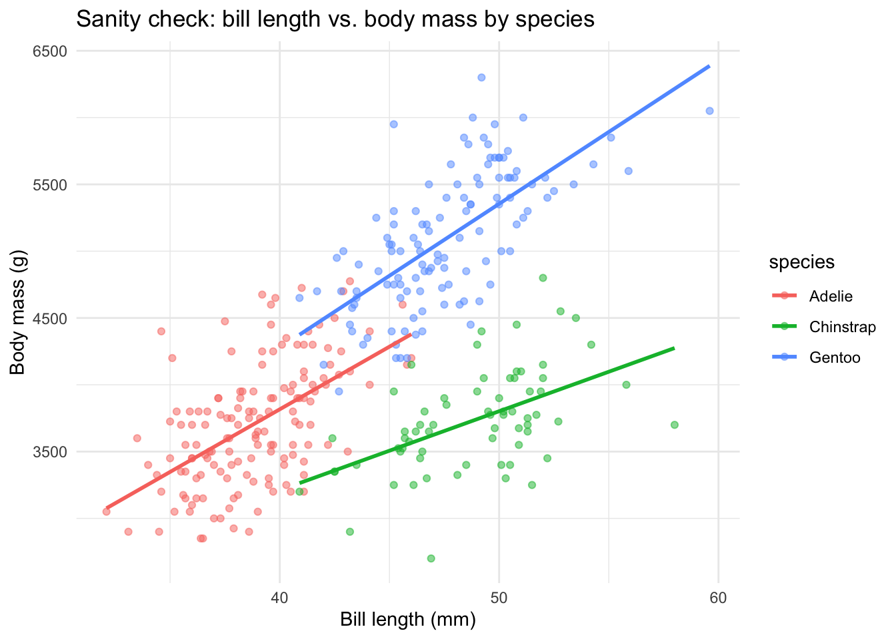

19 — Quality Control: Code and Data Hygiene
Setup
🔥 Data Story Critique — Counting Happiness and Where it Comes From (FlowingData, 2021)
Source: https://flowingdata.com/2021/07/29/counting-happiness/
Author: Nathan Yau.
Note on repeated observation. This is the second Nathan Yau piece we have critiqued — the first being Seeing How Much We Ate Over the Years in ICA 9. The critique here is calibrated against that prior observation, treating this piece as an iteration in the same body of work rather than as a standalone artefact. That framing makes some improvements and some regressions visible that would not be visible from a single reading.
What is the data story?
The underlying dataset is HappyDB (Asai et al., LREC 2018), a corpus of ~100,000 “happy moments” collected from ~10,000 Amazon Mechanical Turk workers who were asked to list ten things that recently made them happy. Yau’s analytical move is to parse each sentence into a subject-verb-object triple (“I watched a good movie yesterday” → I / watched / movie), and then to tabulate the most common SVO combinations. The piece opens on the observation that the subject field splits almost cleanly into “I” versus “Others” — which Yau uses as the top-level partition. Three ribbon-style flow diagrams follow: (1) a full self-vs-others view, (2) a drill-down on the “Others” group showing family terms (husband, son, friend, wife, daughter), and (3) a specialized view of pet-related moments with much more specific verbs (snuggled, jumped, curled, rather than the generic had/got/watched of the human view). The story’s closing claim is that happiness comes “in many forms, from many places, and through many paths.”
What is effective?
The SVO parsing is a genuinely good analytical choice for this data. The naïve approach to a corpus of 100,000 text fragments is a bag-of-words frequency count — a word cloud. Bag-of-words tells you that dinner, movie, family, dog are common, but it cannot distinguish “I watched a movie” from “My son gave me a movie” because both contribute the same tokens. Parsing into SVO triples promotes the grammatical relationship into a first-class analytical object, so who acts on what becomes visible. For a seven-paragraph blog post, that is substantive analytical lift.
The “Self” vs. “Others” partition is load-bearing rather than arbitrary. Yau tells the reader explicitly that the subject field is bimodal — “I” on one side and everyone else on the other — and uses that empirical structure as the piece’s primary scaffolding. It is not a random slice chosen for visual convenience; it is the shape of the data, and building the argument on top of that shape is the right move.
The “team won game” surprised-then-verified moment is a discipline tell. When an unexpected result appears in a top-five list, the professional move is to go back to the raw text and check whether the parser captured something real or created an artefact. Yau does this, reports what he found (“mostly people who were happy their favorite sports team won a game”), and updates the interpretation accordingly. This is the minimum standard of data analysis honesty, and explicitly showing the verification step in a blog post register is a small but real piece of craft.
The Mechanical Turk caveat is in the main text, not buried in a footnote. This is a genuine improvement over Yau’s 2021 USDA food-availability piece, where the fundamental availability-vs-consumption caveat was confined to a single end-of-post paragraph. Here, the sampling limitation — skewed to 20–40-year-olds, likely boosting children and spouses, likely suppressing girlfriend/boyfriend and workplace references — is written into a paragraph that sits between two main charts. That is the correct placement for a methodological limitation that affects the interpretation of the next visual.
The pets section is a well-chosen narrative ending. The shift from generic verbs (had, got, watched) in the human view to specific verbs (snuggled, jumped, curled) in the pet view makes the same analytical point visible in two different textures: human happiness is often described with abstract gestures, pet happiness with concrete actions. Ending on the high-information-density pet view gives the piece a small analytical payoff rather than a flat stop.
What could be improved?
The SVO parser’s error rate is not quantified. Of 100,000 happy moments, how many yielded a clean triple? How many were dropped (moments like “the weather was nice” have no agentive verb)? How many were mis-parsed in ways the “team won game” check didn’t catch? For a computational text pipeline driving a top-five ranking, the parser’s precision and recall are first-order metadata. A single sentence — “about X% of moments could not be cleanly parsed, and among the parseable subset the top rankings are robust to reasonable alternative parsers” — would let the reader calibrate how much the rankings depend on the specific NLP pipeline used.
“Recently” is undefined and the ranking conflates frequency with salience. Participants were asked about things that “recently” made them happy, without temporal anchoring. A person listing yesterday’s dinner, last week’s game, and last month’s child’s graduation all count equally in the tabulation. This means the output is not frequency of happy events but recall-salience of happy events — two different quantities. Dinner happens daily but most dinners are not memorable; a team win is rare but often highly memorable. The top-five list mixes “frequent and ordinary” with “rare and memorable” without distinguishing them, which changes what the piece can and cannot claim. The argument would be more precisely stated as “dinner is the most commonly recalled form of happy moment,” not “dinner is what makes people most happy.”
Single-token subjects flatten heterogeneous relational categories. “Husband,” “son,” “wife,” “daughter” come through as distinct subjects because English vocabulary marks them separately. “Friend” comes through as a single label, even though new/old, close/casual, work/personal friendships produce different kinds of happy moments. The method’s resolution is inherited from the language’s vocabulary structure — family relationships are pre-disaggregated at the word level, social relationships are not — and the analysis reproduces that asymmetry without flagging it. A piece that wanted to be analytically careful about relational sources of happiness would need either a secondary tagging pass on “friend” contexts or an explicit acknowledgement that “friend” is an aggregation under which substantial variation is compressed.
The Mechanical Turk caveat is acknowledged but not given direction. Yau says the sample isn’t representative and gives age-skew as an example, but does not extend the reasoning to the piece’s conclusions. Mturk workers in 2018 were well-documented to skew US and Indian, to be lower-income on average, to work from home, to be male-overrepresented among Indian workers. These demographic skews have directional implications for the happy-moment distribution: low-income participants may systematically over-represent low-cost daily happiness (dinner, TV, family) and under-represent travel, major purchases, and career milestones. That is a specific prediction the caveat should make, not just the abstract statement that “the sample isn’t representative.”
The Western positive-psychology framing of “happiness” is not named. The HappyDB prompt — “list ten things that recently made you happy” — sits inside a research tradition (Seligman-era positive psychology) that has its own assumptions about what “happiness” means as a category, what counts as an instance of it, and how people self-report it. In East Asian affect vocabularies, the distinctions between 幸福 / 快乐 / 满足 / 顺心 are not all captured by a single English word “happy,” and cross-cultural affect research has documented that the prompt design shapes what gets listed. A piece whose closing claim is that “happiness comes in many forms, from many places” has, in fact, shown the many forms of a specific culturally bounded concept of happiness. Naming this would be one line of editorial honesty.
The ribbon diagram visually resembles the alluvial form from the earlier food-availability piece but is doing different work. In the USDA piece, alluvial diagrams were the correct form because the data had a temporal axis and items crossed rank over time. Here, the flow between subject / verb / object is a two-step bipartite matching without a temporal dimension; the visual language is sankey-ish rather than alluvial. A reader who has seen both pieces may interpret the new ribbons through the old reading habit, importing an implicit time axis that isn’t there. This is the reuse of a visual idiom across differently structured problems, and the piece does not disambiguate.
Proportionality. This remains a piece of careful blog-register data work with above-median analytical lift. The critique is calibrated against Yau’s own prior baseline: the Mturk caveat improved; the parser error rate is still not quantified; the temporal-ambiguity issue (“recently”) is new to this piece and unaddressed; the cultural framing of “happiness” was not named and arguably could not be in a piece of this length. For a blog with Yau’s readership and craft, the next step is the move the USDA piece never made either: bring the analytical caveat up from the footnote into the chart itself.
Code Quality Checklist — Worked Examples
The seven principles below are abstract until worked through on real data. What follows is one small example per principle, drawn where possible from patterns that came up across this semester’s ICAs.
1. DRY — Don’t Repeat Yourself
Anti-pattern. Computing the same summary four times with slightly different column names.
Code
# A tibble: 1 × 1
mean_x
<dbl>
1 5.73# A tibble: 1 × 1
mean_y
<dbl>
1 5.73# A tibble: 1 × 1
mean_z
<dbl>
1 3.54Refactor. Extract the pattern into across() or a function.
# A tibble: 1 × 3
x y z
<dbl> <dbl> <dbl>
1 5.73 5.73 3.54The moment the same transformation is typed a second time with a changed column name, the correct move is to parameterize — either via a function argument or via a tidyverse helper like across(). Copy-paste is where bugs come from; the copy that got fixed and the copy that didn’t stay fixed are the same code until they aren’t.
2. Readability
Readability is a cognitive claim about the person who will read the code next — which is usually you, six months from now, with no memory of what you were doing. Two practical habits:
-
Pipe chains over nested function calls.
x |> filter(...) |> mutate(...) |> summarise(...)reads like a sentence;summarise(mutate(filter(x, ...), ...), ...)requires the reader to mentally unwrap the nesting. - One idea per line. When a pipe step does more than one thing, it is often worth splitting into two steps with a named intermediate.
Code
# A tibble: 5 × 3
species island n
<fct> <fct> <int>
1 Gentoo Biscoe 61
2 Adelie Biscoe 3
3 Adelie Dream 2
4 Adelie Torgersen 2
5 Chinstrap Dream 23. Meaningful Names
Anti-pattern. df, tmp, x, result — these carry no information. By the time you come back to the script you have to reconstruct what each was supposed to hold.
Pattern. Names should describe the content and, where relevant, the stage of processing:
-
raw_survey→cleaned_survey→survey_with_outcomes— a pipeline where the name tracks the transformation state -
is_complete_case,has_outlier_bmi— boolean flags named as predicates sofilter(is_complete_case)reads naturally -
fit_lm_with_controls(),extract_ci_at_level()— functions named as verb phrases describing what they do
The test I apply: can I guess what an object holds or a function returns from its name alone, without looking at the definition? If not, the name is underspecified.
4. Testing
For any function that will be reused — even once — write a handful of test cases. testthat is the standard R tool.
Code
# A small function to rescale a numeric vector to [0, 1]
rescale01 <- function(x) {
rng <- range(x, na.rm = TRUE)
if (diff(rng) == 0) return(rep(0.5, length(x)))
(x - rng[1]) / (rng[2] - rng[1])
}
# Tests covering normal case, constant vector, NA handling, negative values
test_that("rescale01 behaves correctly", {
expect_equal(rescale01(c(0, 5, 10)), c(0, 0.5, 1))
expect_equal(rescale01(c(5, 5, 5)), c(0.5, 0.5, 0.5))
expect_equal(rescale01(c(-10, 0, 10)), c(0, 0.5, 1))
expect_equal(rescale01(c(1, NA, 3)), c(0, NA, 1))
expect_length(rescale01(numeric(0)), 0)
})── Warning: rescale01 behaves correctly ────────────────────────────────────────
no non-missing arguments to min; returning Inf
Backtrace:
▆
1. ├─testthat::expect_length(rescale01(numeric(0)), 0)
2. │ └─testthat::quasi_label(enquo(object), arg = "object")
3. │ └─rlang::eval_bare(expr, quo_get_env(quo))
4. └─global rescale01(numeric(0))
5. └─base::range(x, na.rm = TRUE)
6. └─base::.rangeNum(..., na.rm = na.rm, finite = finite, isNumeric = is.numeric)
── Warning: rescale01 behaves correctly ────────────────────────────────────────
no non-missing arguments to max; returning -Inf
Backtrace:
▆
1. ├─testthat::expect_length(rescale01(numeric(0)), 0)
2. │ └─testthat::quasi_label(enquo(object), arg = "object")
3. │ └─rlang::eval_bare(expr, quo_get_env(quo))
4. └─global rescale01(numeric(0))
5. └─base::range(x, na.rm = TRUE)
6. └─base::.rangeNum(..., na.rm = na.rm, finite = finite, isNumeric = is.numeric)Tests that fail loudly when behaviour changes are the closest thing to institutional memory a codebase has. They are also the primary document of what the function is supposed to do — the tests express the contract.
5. Efficiency
Efficiency is worth worrying about when (a) the pipeline is slow enough to disrupt analysis, or (b) it is slow enough to prevent iteration. Below that threshold, readability wins over micro-optimization.
Code
# A tibble: 3 × 3
expression median mem_alloc
<bch:expr> <bch:tm> <bch:byt>
1 grow_vector 72.5ms 191.3MB
2 preallocate 774.6µs 48.8KB
3 vectorized 41ns 0BGrowing a vector with c() inside a loop is ~100× slower than pre-allocating and ~1,000× slower than the vectorized form. The mem_alloc column explains why: every c(x, i) allocates a fresh vector one element longer, so total allocation scales quadratically with the iteration count.
6. Reproducibility
Reproducible code produces the same output on a different machine, in a different session, by a different user. The basic disciplines:
-
Relative paths, not absolute.
read_csv("data/survey.csv")works when the project folder is cloned anywhere;read_csv("/Users/zhijun/Documents/.../survey.csv")works only on my laptop. -
here::here()for paths when the working directory is unstable (e.g., Quarto renders from the document’s directory, R scripts from the project root).here::here("data", "survey.csv")resolves consistently. -
set.seed()before any stochastic operation that the analysis depends on — simulation, sampling, bootstrap, random imputation. Without it,?_mapandrnormgive a different answer every run, and the figure in today’s draft can’t be reproduced tomorrow. -
Pin package versions with
renvfor serious projects. This is the difference between a project that works in 2026 and a project that stops working when a dependency updates. -
Include
sessionInfo()in the rendered output for any analysis meant to travel.
R version 4.4.2 (2024-10-31)
Platform: aarch64-apple-darwin20
Running under: macOS 26.3
Matrix products: default
BLAS: /Library/Frameworks/R.framework/Versions/4.4-arm64/Resources/lib/libRblas.0.dylib
LAPACK: /Library/Frameworks/R.framework/Versions/4.4-arm64/Resources/lib/libRlapack.dylib; LAPACK version 3.12.0
locale:
[1] en_US.UTF-8/en_US.UTF-8/en_US.UTF-8/C/en_US.UTF-8/en_US.UTF-8
time zone: America/Chicago
tzcode source: internal
attached base packages:
[1] stats graphics grDevices utils datasets methods base
other attached packages:
[1] palmerpenguins_0.1.1 testthat_3.2.3 bench_1.1.4
[4] janitor_2.2.1 naniar_1.1.0 lubridate_1.9.4
[7] forcats_1.0.0 stringr_1.5.1 dplyr_1.1.4
[10] purrr_1.0.4 readr_2.1.5 tidyr_1.3.1
[13] tibble_3.2.1 ggplot2_3.5.2 tidyverse_2.0.0
loaded via a namespace (and not attached):
[1] utf8_1.2.4 generics_0.1.3 stringi_1.8.4 hms_1.1.3
[5] digest_0.6.37 magrittr_2.0.3 evaluate_1.0.3 grid_4.4.2
[9] timechange_0.3.0 pkgload_1.5.0 fastmap_1.2.0 rprojroot_2.1.1
[13] jsonlite_2.0.0 brio_1.1.5 scales_1.3.0 cli_3.6.5
[17] rlang_1.1.7 munsell_0.5.1 withr_3.0.2 yaml_2.3.10
[21] tools_4.4.2 tzdb_0.5.0 colorspace_2.1-1 profmem_0.7.0
[25] vctrs_0.6.5 R6_2.6.1 lifecycle_1.0.4 snakecase_0.11.1
[29] htmlwidgets_1.6.4 waldo_0.6.1 pkgconfig_2.0.3 desc_1.4.3
[33] pillar_1.10.1 gtable_0.3.6 glue_1.8.0 visdat_0.6.0
[37] xfun_0.52 tidyselect_1.2.1 knitr_1.51 htmltools_0.5.8.1
[41] rmarkdown_2.30 compiler_4.4.2 7. Simple Tasks in Functions
One function should do one thing. A function that does two things is harder to test, harder to re-use, harder to compose.
Anti-pattern. One function that loads data, cleans it, fits a model, extracts coefficients, and formats a table.
Pattern. Five functions, each doing one step, composed in a pipeline.
Code
# Toy-sized versions of each step, so the composition pattern is demonstrable.
# In a real project each function would live in its own file under R/.
load_survey_data <- function(path) read_csv(path, show_col_types = FALSE)
clean_survey <- function(data) data |> clean_names() |> drop_na()
restrict_to_adults <- function(data, min_age = 18) data |> filter(age >= min_age)
fit_outcome_model <- function(data, formula) lm(formula, data = data)
summarise_model_fit <- function(fit) broom::tidy(fit, conf.int = TRUE)
# Stand-in dataset so the pipeline actually runs end-to-end
demo_path <- tempfile(fileext = ".csv")
write_csv(
tibble(
ID = 1:6,
Age = c(17, 22, 34, 45, 29, 51),
X1 = c(1.2, 2.4, 3.1, 4.0, 2.8, 5.5),
Y = c(10, 21, 29, 42, 25, 58)
),
demo_path
)
# The composition — each step one idea, each step independently testable
raw <- load_survey_data(demo_path)
cleaned <- clean_survey(raw)
filtered <- restrict_to_adults(cleaned)
fit <- fit_outcome_model(filtered, formula = y ~ x1)
summary <- summarise_model_fit(fit)
summary# A tibble: 2 × 7
term estimate std.error statistic p.value conf.low conf.high
<chr> <dbl> <dbl> <dbl> <dbl> <dbl> <dbl>
1 (Intercept) -8.42 1.70 -4.95 0.0159 -13.8 -3.00
2 x1 12.2 0.457 26.7 0.000115 10.7 13.6 Each step is independently testable, independently reusable, and independently debuggable. When something breaks, the failing function is the scope of the bug hunt — not the whole pipeline.
Data Quality Checklist — Worked Examples
Always keep the raw data
The first rule. The raw data file should be read-only, never modified in place. Every transformation creates a derived object or file; the original stays untouched. This is the single discipline that allows you to back out from a mistake six weeks later when you realize the 2,000 rows you “cleaned” included a systematic misinterpretation of one column.
Code
# Demonstrate the pattern against a temp directory so this chunk actually runs.
# In a real project, swap `tmp_dir` for your project's `data/raw` and `data/processed` folders.
tmp_dir <- tempfile("survey_demo_"); dir.create(tmp_dir)
raw_path <- file.path(tmp_dir, "survey_2024.csv")
processed_path <- file.path(tmp_dir, "survey_cleaned.csv")
# Seed the raw file once (standing in for a vendor-supplied dataset)
write_csv(tibble(ID = 1:3, Name = c("A", "B", NA)), raw_path)
# --- The pattern itself ---
raw_survey <- read_csv(raw_path, show_col_types = FALSE) # read once, never write back
cleaned <- raw_survey |> clean_names() |> drop_na(id) # derived object
write_csv(cleaned, processed_path) # written to a different path
cleaned# A tibble: 3 × 2
id name
<dbl> <chr>
1 1 A
2 2 B
3 3 <NA> Check missing values before trusting anything
# A tibble: 8 × 3
variable n_miss pct_miss
<chr> <int> <num>
1 sex 11 3.20
2 bill_length_mm 2 0.581
3 bill_depth_mm 2 0.581
4 flipper_length_mm 2 0.581
5 body_mass_g 2 0.581
6 species 0 0
7 island 0 0
8 year 0 0 The pattern: every time you read data, immediately run miss_var_summary() to count NAs per variable. If a column has unexpected NAs, that is evidence the data parsing or the data source is not what you thought. Two percent missing on a variable you expected to be complete is a research question, not a nuisance.
Parse dates with eyes open
Dates are the single most common source of silent data corruption because date strings look like dates but can be in any of a dozen formats.
Code
dates_raw <- c("2024-03-15", "03/15/2024", "15/03/2024", "March 15, 2024")
# lubridate tries, but the US/EU ambiguity can silently swap month and day
tibble(raw = dates_raw) |>
mutate(
ymd_parsed = lubridate::ymd(raw, quiet = TRUE),
mdy_parsed = lubridate::mdy(raw, quiet = TRUE),
dmy_parsed = lubridate::dmy(raw, quiet = TRUE)
)# A tibble: 4 × 4
raw ymd_parsed mdy_parsed dmy_parsed
<chr> <date> <date> <date>
1 2024-03-15 2024-03-15 NA NA
2 03/15/2024 NA 2024-03-15 NA
3 15/03/2024 NA NA 2024-03-15
4 March 15, 2024 NA 2024-03-15 NA Each parser fails on the strings it cannot interpret (returning NA), but for an ambiguous string like "03/04/2024" — is that March 4 or April 3? — the two parsers will both succeed and produce different, equally plausible dates. The only defence is knowing the data’s provenance (which country’s conventions? which system exported it?) and verifying with a small sample.
Parse strings with test cases
When using regular expressions to extract structured information from text, always test against both cases you want to match and cases you want to exclude.
Code
# A tibble: 5 × 2
raw is_valid
<chr> <lgl>
1 les@mac.edu TRUE
2 les@mac.net TRUE
3 les@mac. FALSE
4 les@macedu FALSE
5 not an email FALSE The pattern: one list of positive cases (should match), one list of negative cases (should not match), a single tibble showing the regex decision on each. Any surprise in either column means the regex is wrong.
Join discipline
Joins are where datasets most often go wrong. Three checks before merging:
Row-count prediction. Before the join, predict how many rows the result should have. If an inner-joined table has 9,800 rows and you expected 10,000, that’s 200 missing matches to investigate.
Key-representation consistency. id = 1 and id = "01" will not match. Check class() and spot-check values on both sides before joining.
Anti-join for unmatched rows. anti_join(x, y) shows the rows in x that had no match in y. This is the single most useful diagnostic for understanding why a join returned fewer rows than expected.
The following simulation demonstrates the failure mode. patients$id is integer; outcomes$id is character — same values, different types.
Code
[1] "integer"[1] "character"What goes wrong. Current dplyr (≥1.1) refuses the mismatched join outright — the error message itself is the diagnostic. Older dplyr would silently coerce or return a table where every outcome was NA, which was the original motivation for type discipline. Either way, the lesson is the same: reconcile key types before joining, or your pipeline will either crash or (worse) fail silently.
Code
# Capture the error so the chunk keeps running. In older dplyr this would
# instead return a tibble with outcome column entirely NA — no error, no warning.
tryCatch(
left_join(patients, outcomes, by = "id"),
error = function(e) {
cat("left_join refused to proceed:\n", conditionMessage(e), sep = "")
}
)left_join refused to proceed:
Can't join `x$id` with `y$id` due to incompatible types.
ℹ `x$id` is a <integer>.
ℹ `y$id` is a <character>.The fix. Coerce the keys to a common type on both sides before joining. Integer-to-character and character-to-integer are both safe here (the character values are clean integers); for messier keys, coercing both to character is the conservative default.
Code
# A tibble: 5 × 3
id name outcome
<int> <chr> <dbl>
1 1 A 10
2 2 B 20
3 3 C 30
4 4 D NA
5 5 E NAThe diagnostic for partial matches. Even with types reconciled, only three of five patients have outcome data. anti_join() shows which rows in patients had no match — the starting point for investigating whether those are truly missing, filtered elsewhere in the pipeline, or indicative of a deeper data problem.
Check for duplicates before aggregating
A duplicate record silently counted twice in a group_by() |> summarise(n = n()) will inflate the group count without any warning. janitor::get_dupes() shows you duplicate rows:
Code
# Add a synthetic duplicate to demonstrate
penguins_with_dup <- penguins |>
slice(c(1:344, 1)) # duplicate the first row
# `get_dupes` takes the key columns and returns the duplicated rows
penguins_with_dup |>
get_dupes(species, island, bill_length_mm, bill_depth_mm, flipper_length_mm, body_mass_g, sex, year) |>
head()# A tibble: 2 × 9
species island bill_length_mm bill_depth_mm flipper_length_mm body_mass_g
<fct> <fct> <dbl> <dbl> <int> <int>
1 Adelie Torgersen 39.1 18.7 181 3750
2 Adelie Torgersen 39.1 18.7 181 3750
# ℹ 3 more variables: sex <fct>, year <int>, dupe_count <int>For real data the “key” is whatever combination of columns should uniquely identify a record — often a subset of the available columns, not all of them.
Sanity-visualize early and often
The cheapest bug catcher in data analysis is a quick plot. Before any substantive modelling, plot the outcome and the key predictors:
Code

Four questions to ask of any such plot:
- Does the number of points look right? If you expected 340 and see 330, something dropped.
- Are the values in the expected range? Penguins with body mass of 50 kg are a data-entry error.
- Do the relationships make sense? Positive slope where you expected negative is a sign flip.
- Do the groups behave as expected? Same intercept-and-slope across groups where you expected heterogeneity means your group variable may be wrong.
Reflection
Code quality is an institutional-memory problem, not a style problem. The seven principles above are often framed as aesthetics — “write clean code” — but they are really disciplines for future communication. The person most likely to read my code is me in six months, with no memory of what I was doing. The person second most likely is a reviewer, collaborator, or successor who needs to verify or extend the work. DRY, readable naming, tests, reproducibility — these are the minimum standard for code that communicates across time and across people. They are exactly the same problem that good academic writing solves: making the reasoning legible to someone who doesn’t already share your context.
Data quality is about respecting the gap between the world and the dataset. The raw-data principle, missing-value audit, date parsing, join discipline, duplicate checks, sanity visualization — these are all versions of the same move: don’t trust that the data is what you think it is until you’ve checked. The world is noisy and data-collection pipelines are imperfect, and the dataset you inherit is the output of many human decisions you did not witness. Each check is a place where that gap between the world and the representation can be surfaced before it contaminates downstream results. This is exactly the point of the human-centered data science exercise from ICA 17 — the checklist in this ICA is its operational counterpart.
The same discipline that makes code reproducible makes research defensible. For empirical work at scale — the work that a thesis, a journal submission, or a policy brief rests on — the question “does this analysis hold up under scrutiny” reduces to: can a reviewer re-run your pipeline from your data and code, and get the same numbers? If the answer is no, the conclusions are not defensible regardless of how sophisticated the analysis looked. Relative paths, seed-setting, environment capture, and function decomposition are not bureaucratic overhead — they are the infrastructure that makes honest research possible. The habits formalized in this ICA are the minimum standard for any work that is meant to travel beyond a single laptop.